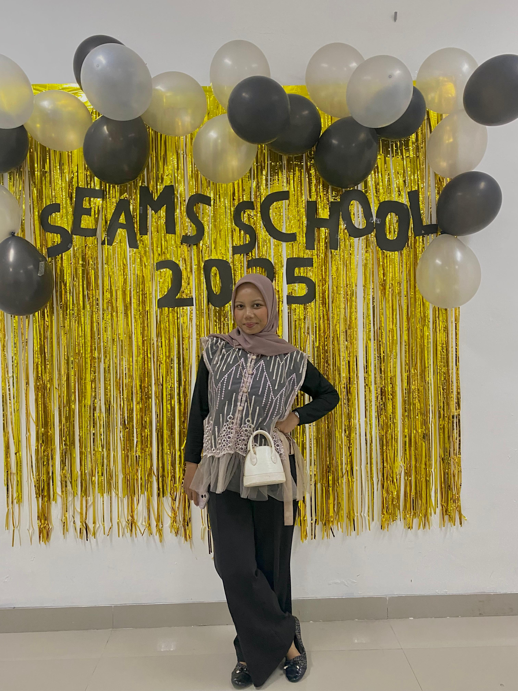
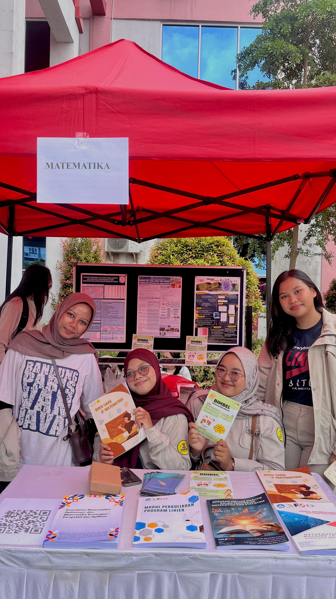
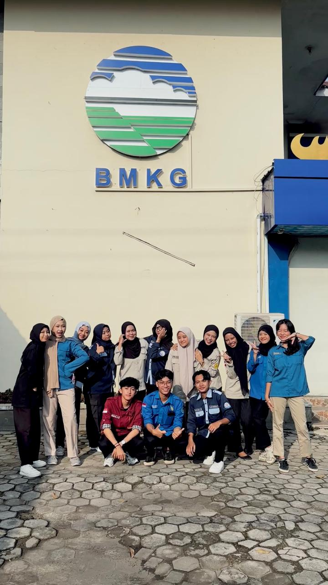
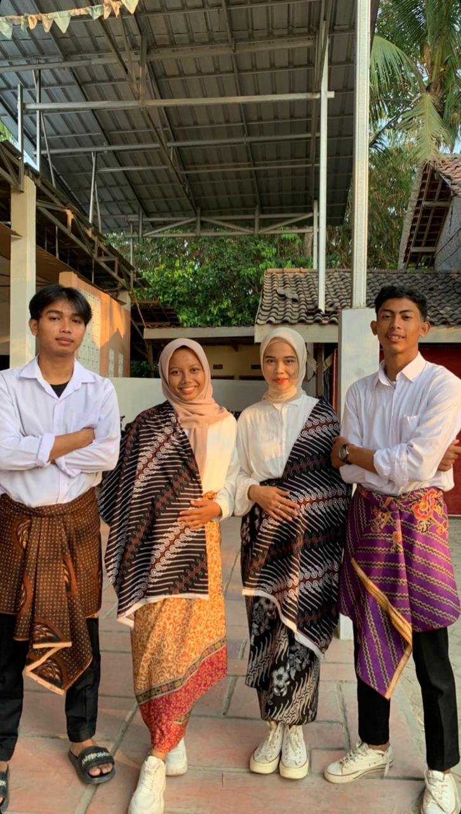

Hello!!! Saya Ulfa Nur Janah, S.Mat.
Selamat datang di Portofolio Saya:)
Tentang Saya
Halo, saya Ulfa Nur Janah, Fresh Graduate Program Studi S1 Matematika Institut Teknologi Sumatera yang memiliki minat pada bidang pendidikan, analisis data, dan pemodelan matematika. Selama masa perkuliahan, saya aktif mengembangkan kemampuan akademik dan kepemimpinan melalui berbagai pengalaman mengajar, penelitian, organisasi, serta kegiatan profesional. Saya percaya bahwa matematika tidak hanya menjadi alat untuk menyelesaikan permasalahan numerik, tetapi juga dapat digunakan sebagai dasar pengambilan keputusan yang efektif dan berbasis data. Saya memiliki pengalaman sebagai Asisten Tutorial Matematika Dasar yang mengajar 78 mahasiswa dari berbagai program studi serta Asisten Praktikum Pemodelan Komputasi dan Analisis Numerik yang mendampingi lebih dari 50 mahasiswa dalam kegiatan praktikum dan penyusunan laporan. Selain itu, saya pernah melaksanakan kerja praktik di BMKG Maritim Lampung, berpartisipasi dalam berbagai organisasi dan kepanitiaan, serta aktif dalam kegiatan akademik seperti presentasi pada Symposium on Data Science. Melalui pengalaman tersebut, saya mengembangkan keterampilan dalam komunikasi, pengajaran, kepemimpinan, kerja sama tim, serta pengolahan data menggunakan Python, MATLAB, dan berbagai perangkat pendukung lainnya.

Pengalaman
Pengalaman Organisasi

Staff Acara – 1st International Conference on Sustainability in Sciences for the Future (ICSSF) 2024
Juli 2024 - September 2024
- Mendukung pelaksanaan operasional ICSSF 2024, sebuah konferensi internasional yang dihadiri oleh lebih dari 100 peserta, termasuk pembicara, akademisi, dan peneliti dari berbagai institusi.
- Membantu mengelola sesi acara, alur peserta, serta koordinasi teknis guna memastikan seluruh rangkaian kegiatan berjalan tepat waktu dan sesuai dengan agenda yang telah ditetapkan.
- Berkoordinasi dengan panitia, pembicara, dan pemangku kepentingan dalam menangani kebutuhan operasional, persiapan logistik, serta kesiapan ruang konferensi selama acara berlangsung.
- Berkontribusi dalam menjaga komunikasi yang efektif dan proses manajemen acara yang terorganisir untuk mendukung penyelenggaraan konferensi internasional yang profesional.

Staff Badan Usaha Milik Himpunan (BUMH) – HIMATIKA ITERA
Febuari 2025 - Desember 2025
- Berkontribusi dalam penggalangan dana untuk mendukung kegiatan himpunan dengan total dana yang berhasil dihimpun mencapai Rp7.000.000 melalui berbagai program dan kerja sama eksternal.
- Melakukan pendekatan dan koordinasi dengan pihak eksternal untuk memperoleh dukungan sponsor, serta berhasil menjalin kerja sama dengan Frisian Flag sebagai sponsor kegiatan himpunan.
- Berpartisipasi dalam perencanaan, pelaksanaan, dan evaluasi 8 program kerja BUMH yang seluruhnya berhasil terlaksana sesuai target dan jadwal yang telah ditetapkan.
- Bekerja sama dengan tim yang terdiri dari 5 staf, 1 sekretaris, dan 1 ketua BUMH di bawah naungan Departemen Kebendaharaan untuk mendukung operasional, pengelolaan pendanaan, dan pengembangan kemitraan organisasi.

Ketua Badan Usaha Milik Himpunan (BUMH) – HIMATIKA ITERA
Febuari 2025 - Desember 2025
- Memimpin Badan Usaha Milik Himpunan (BUMH) dalam merancang dan melaksanakan strategi penggalangan dana yang berhasil memberikan kontribusi pendanaan sebesar Rp9.000.000 untuk mendukung berbagai kegiatan himpunan.
- Menginisiasi, mengoordinasikan, dan mengevaluasi pelaksanaan 8 program kerja utama serta 2 program kerja tambahan guna meningkatkan keberlanjutan usaha dan sumber pendanaan organisasi.
- Mengelola dan mengarahkan tim yang terdiri dari 6 staf dan 1 sekretaris dalam menjalankan operasional BUMH, memastikan setiap program kerja terlaksana secara efektif dan sesuai target.
- Membangun serta menjaga hubungan kerja sama dengan pihak eksternal untuk mendukung kegiatan usaha, pengembangan kemitraan, dan peningkatan sumber pendanaan organisasi.

Desain Grafis – Badan Nasional Sertifikasi profesi (BNSP)
Agustus 2025
- Mengikuti Pelatihan Desain Grafis tingkat Provinsi Lampung yang diselenggarakan selama 5 hari berturut-turut dan diikuti oleh 100 peserta dari berbagai daerah.
- Mempelajari prinsip-prinsip dasar desain grafis, termasuk tata letak (layout), tipografi, komposisi warna, dan komunikasi visual.
- Mengembangkan keterampilan dalam penggunaan perangkat lunak desain grafis untuk menghasilkan media promosi dan konten visual yang informatif serta menarik.
- Menyelesaikan berbagai tugas dan praktik desain selama pelatihan sebagai bentuk penerapan materi yang telah dipelajari.

Staff Acara – Seams School 2025 (South East Asia Mathematics School 2025)
Agustus 2025
- Mendukung pelaksanaan SEAMS School, program akademik internasional yang melibatkan peserta, delegasi, dan pemateri dari 5 negara selama 8 hari kegiatan.
- Mengelola alur dan kebutuhan operasional acara untuk memastikan seluruh rangkaian kegiatan akademik, diskusi, dan kolaborasi internasional berjalan sesuai jadwal.
- Berkoordinasi dengan panitia, institusi, serta delegasi internasional guna mendukung komunikasi dan kelancaran pelaksanaan program lintas negara.
- Bekerja sama dalam tim kepanitiaan untuk menciptakan pengalaman belajar yang kondusif serta mendukung keberhasilan penyelenggaraan program akademik internasional.

Staff Sponshorship – SCIENCE FEST ITERA
juli 2025 - September 2025
- Berperan sebagai Staff Sponsor dalam kegiatan SAINFES dengan melakukan pendekatan dan komunikasi kepada lebih dari 350 vendor dan mitra potensial untuk mendukung kebutuhan pendanaan acara.
- Menjalin dan menjaga hubungan kerja sama dengan berbagai pihak eksternal melalui negosiasi serta koordinasi sponsorship guna meningkatkan dukungan terhadap kegiatan.
- Berhasil memperoleh dukungan sponsorship berupa dana tunai sebesar Rp42.000.000 serta berbagai kebutuhan kegiatan dalam bentuk barang dan layanan dari mitra sponsor.
- Berkolaborasi dengan tim sponsorship dalam menyusun strategi akuisisi sponsor, pengelolaan kemitraan, serta pemenuhan hak dan kewajiban sponsor selama kegiatan berlangsung.

Kerja Praktik – Badan Meteorologi, Klimatologi, dan Geofisika
Juni 2025 - Juli 2025
- Melaksanakan Kerja Praktik selama 25 hari di BMKG Maritim Lampung untuk mempelajari proses observasi, pencatatan, dan pelaporan data cuaca maritim.
- Melakukan pengamatan dan pencatatan data cuaca maritim setiap satu jam sekali sesuai dengan prosedur operasional yang berlaku.
- Mengelola dan menginput data hasil observasi secara teliti sebagai bahan pelaporan kepada BMKG Pusat.
- Berpartisipasi dalam kegiatan observasi lapangan serta memastikan data pengamatan terdokumentasi dengan baik dan akurat.

First Gathering – Matematika 2023
Oktober 2023
- Memimpin Divisi Pendanaan yang terdiri dari 5 staf dalam merencanakan dan melaksanakan strategi penggalangan dana untuk mendukung kegiatan First Gathering.
- Berhasil menghimpun dana sebesar Rp2.000.000 melalui berbagai kegiatan dan kerja sama yang mendukung kebutuhan operasional acara.
- Mengoordinasikan tim dalam pelaksanaan program pendanaan, mulai dari perencanaan, pelaksanaan, hingga evaluasi kegiatan.
- Berperan sebagai Master of Ceremony (MC) nonformal pada kegiatan inti untuk membangun suasana yang interaktif, komunikatif, dan meningkatkan keterlibatan peserta selama acara berlangsung.
Projects
Clustering Analysis of Indonesian Provinces Based on Rice Farming Characteristics in 2024
Skills


Honors and Awards